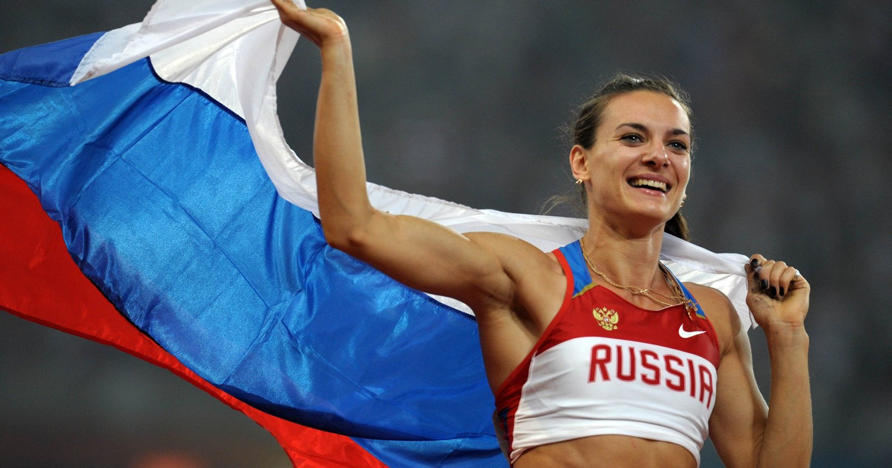

Легкая атлетика в России

Первый кружок легкоатлетов в Российской империи открылся в 1888 году под Царским селом – это была организация бегунов.
Через 2 года организация переезжает в столицу того времени и становится «Петербургским обществом любителей бега».
Начиная с 20-х годов, легкая атлетика развивалась на советском пространстве довольно активно. И в Российской Федерации большое значение уделяют этим видам спорта, что не могло не сказаться на результатах наших спортсменов – 78 олимпийских медалей (из них 26 – золотых, 27 – серебряных и 25 – бронзовых). Российскими легкоатлетами поставлено множество мировых рекордов –по прыжку с шестом – 5,06 м (Еленой Исинбаевой), бег 3000 м с препятствиями -8:58,81 (Гульнара Самитова-Галкина) и другие.
Лучшие российские легкоатлеты на данный момент
- Елена Исинбаева
- Двукратная олимпийская чемпионка (2008, 2012) в прыжках с шестом
- Бронзовый призер Игр-2012
- Двукратная чемпионка мира (2005, 2007)
- Четырехкратная чемпионка мира в помещении (2004, 2006, 2008, 2012)
- Анна Чичерова
- Олимпийская чемпионка – 2012 в прыжках в высоту
- Чемпионка мира – 2011, двукратный серебряный призер чемпионатов мира (2007, 2009)
- Чемпионка мира в помещении – 2005
- Чемпионка Универсиады-2001
- Татьяна Лебедева
- Олимпийская чемпионка – 2004 в прыжках в длину
- Трехкратная чемпионка мира (2001, 2003 – тройной, 2007 – длина)
- Трехкратная чемпионка мира в помещении (2004, 2006 – тройной, 2004 – длина)
- Чемпионка Универсиады-2001 в тройном прыжке
- Светлана Мастеркова
- Двукратная олимпийская чемпионка – 1996 в беге на 800 и 1500 метров
- Чемпионка мира – 1999
- Рекордсменка мира в беге на 1 км и 1 милю
- Юрий Борзаковский
- Олимпийский чемпион – 2004 в беге на 800 метров
- Чемпион мира в помещениях – 2001
- Двукратный серебряный (2003, 2005) и бронзовый (2007, 2011) призер чемпионата мира
- Чемпион Европы – 2012
В основном они побеждали в следующих соревнованиях:
- Олимпийские игры
- Чемпионат мира
- Чемпионат Европы
- Чемпоинат России
В преддверии чемпионата мира по легкой атлетике, который впервые в истории примет Москва, «Большой спорт» оглянулся назад и составил свой рейтинг-лист величайших легкоатлетов и легкоатлеток в истории суверенной России
Спортивные нормативы
| Бег | ||||||
|---|---|---|---|---|---|---|
| Дисциплина | МСКС | МС | КМС | I разряд | II раяряд | III раяряд |
| бег 100м | 10,28 | 10,64 | 10,94 | 11,44 | 12,04 | 12,94 |
| бег 200м | 20,75 | 21,34 | 22,24 | 23,24 | 24,44 | 25,84 |
| бег 400м | 45,80 | 47,35 | 49,65 | 52,15 | 56,15 | 1.00,15 |
| бег 800м | 1.46,50 | 1.49,15 | 1.55,15 | 2.01,15 | 2.10,15 | 2.20,15 |
| бег 1000м | 2.18,0 | 2.21,0 | 2.28,0 | 2.36,0 | 2.48,0 | 3.00,00 |
| бег 5000м | 13.25,0 | 14.00,0 | 14.40,0 | 15.30,0 | 16.35,0 | 17.45,0 |
| бег 10000м | 28.06,0 | 29.25,0 | 30.35,0 | 32.30,0 | 34.40,0 | 38.00,0 |